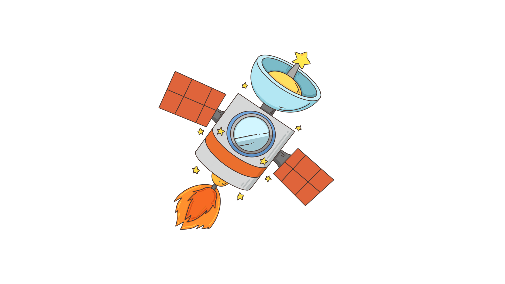
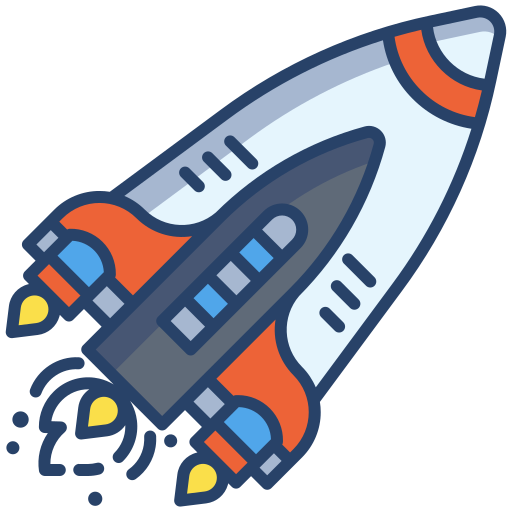
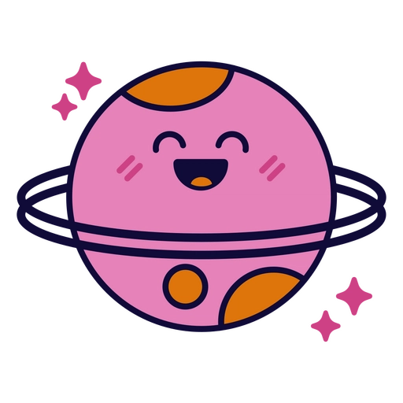
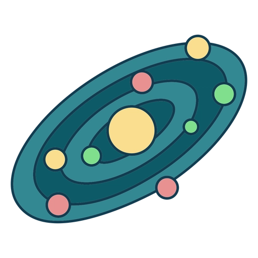

ESTADO SATELITAL
ENLACE ACTIVO
TERMINAL DE COMUNICACIÓN
ENCRIPTACIÓN DE 256 BITS🕗 PROCESANDO SEÑAL...

PROPULSIÓN
ESTABLE
Iniciando enlace neuronal con la terminal de comunicación...
ℹ️ ESTADO DEL SISTEMA:
¿Listo para la transmisión?



